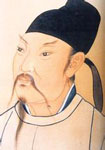

李白是中国唐代伟大的浪漫主义诗人，被后人尊称为“诗仙”，与杜甫并称
为“李杜”。李白的诗以抒情为主。其诗风格豪放飘逸洒脱，想象丰富，语言流转自然，音律和谐多变。善于从民歌、神话中汲取营养素材，构成其特有的瑰丽绚烂的色彩，是屈原以后中国最为杰出的浪漫主义诗人，代表中国古典积极浪漫
主义诗歌的新高峰。他具有超异寻常的艺术天才和磅礴雄伟的艺术力量。
他的大量诗篇，既反映了那个时代的繁荣气象，也揭露和批判了统治集团的荒淫和腐败，表现出蔑视权贵，反抗传统束缚，追求自由和理想的积极精神。存诗近千首，有李太白集》，是盛唐浪漫主义诗歌的代表人物。